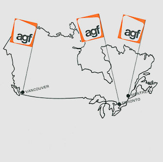
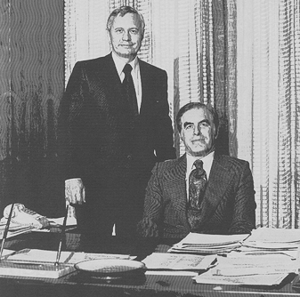
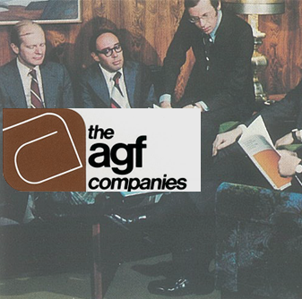

1970s
Challenging Times
-
Despite the difficult conditions of the 1970s and early 1980s, AGF never once reported a loss. At the same time, its funds consistently outperformed the markets.
-
1971 US$ delinked from gold

For AGF, it meant a temporary crisis of confidence in its flagship American Growth Fund – investors who’d taken comfort that their investments were backed by gold were suddenly deprived of this security blanket.
Those who remained in the Fund were rewarded with a 30% return vs. only 6% for the Dow-Jones Industrials.
-
1972 AGF 2nd-largest Canadian mutual fund company
Industry’s first Japan fund added to the lineup with the acquisition of Canadian Security Management (CSM).
This acquisition makes AGF the second-largest mutual fund company in Canada.
-
1973 Change in leadership
In 1973, Warren Goldring replaced Allan Manford as Company President.
Allan Manford remained as Chairman.
-
1975 Symbolizing growth
The new logo was chosen to symbolize the many areas into which AGF Companies had diversified since the early 1960s.
-
1976 Another industry first
AGF launches AGF Money Market Fund, the perfect antidote to the understandably cautious investment temperament of the times.
-
"The most important asset of your Company is the staff. The year 1978 demonstrated again that they are dedicated and hard working and becoming ever more proficient in their respective responsibilities. Their efforts are fully appreciated."
Warren Goldring, Feb. 1979